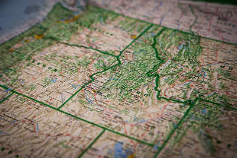

Home Page

Proposed New Forecast Zones in Southeast Idaho
In Idaho, most long-fused watches, warnings, and advisories issued by the NWS (such as Wind Advisories and Winter Storm Warnings) are issued in areas called “zones”. Our current configuration of 11 forecast zones was created during the mid 1990s using broad-brushed climate areas and has not significantly changed since that time. Over the years, NWS Pocatello meteorologists have found that our current zone configuration does not adequately reflect important local differences in geography and weather impacts. This sometimes results in "over-warning", where an impact is occuring within the current structure of our zones. To provide a better service to our community we are working towards changing our zone configuration from 11 zones to 25 zones. These proposed zone changes are based on both climatological data, such as average annual precipitation, known weather, water and climate impacts, and forecaster experience. These changes were extensively discussed and collaborated with local and state emergency managers. The new proposed zones will allow us to better emphasize local impact areas and provide more accurately watches, warnings, and advisories in these known regions. Recent feedback about this proposal from several local media sources and our Idaho Transportation Department partners was very positive.

Contact Information
30 North 1st East
Preston, ID 83263
555.555.5555
theweathersite@gmail.com